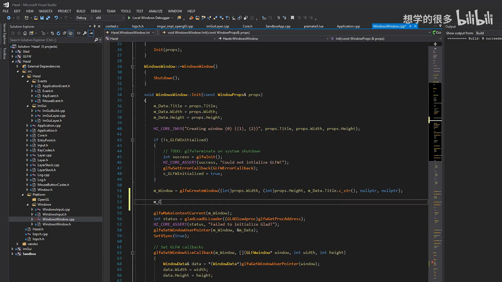
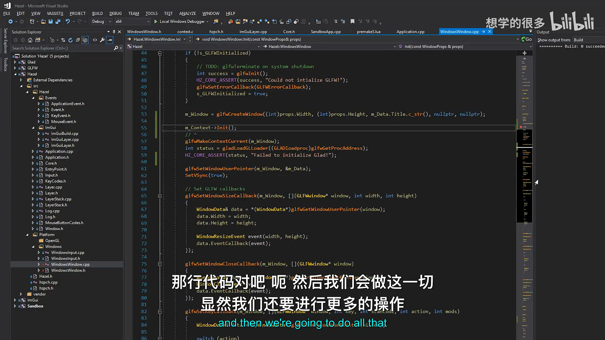
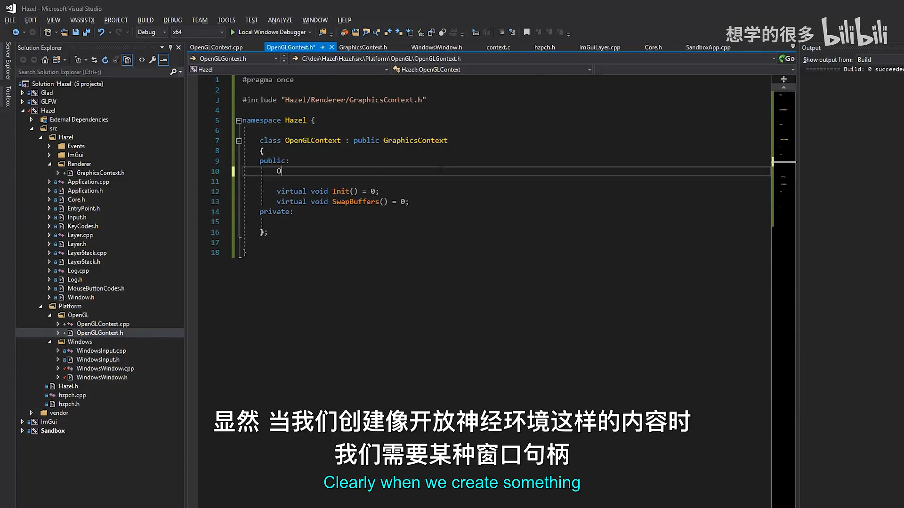
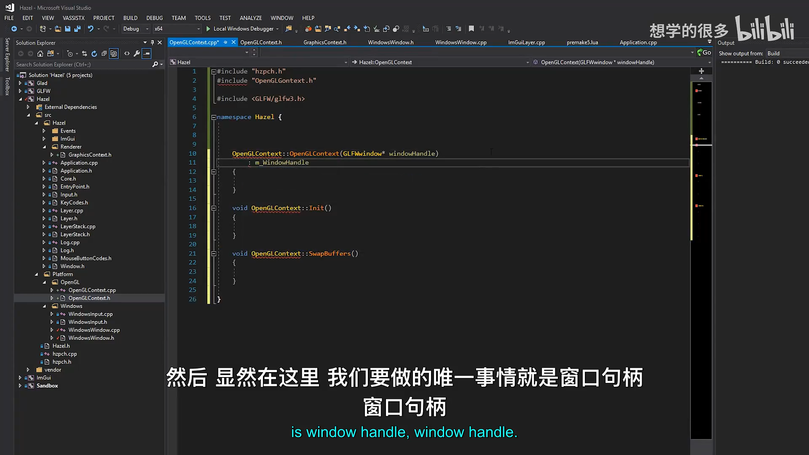
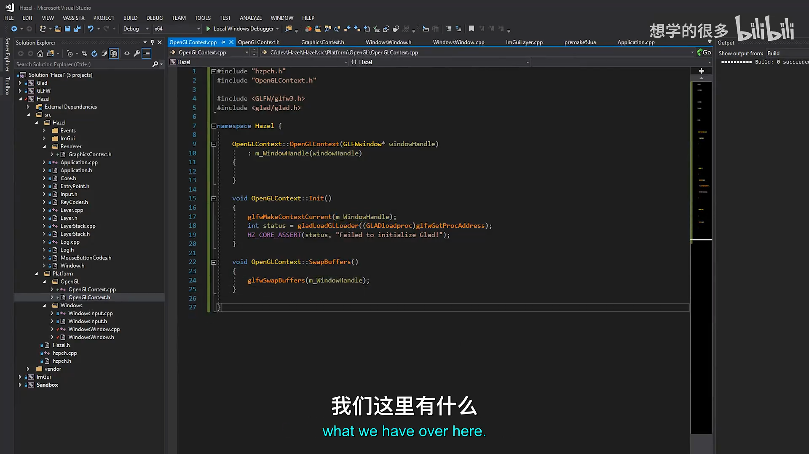
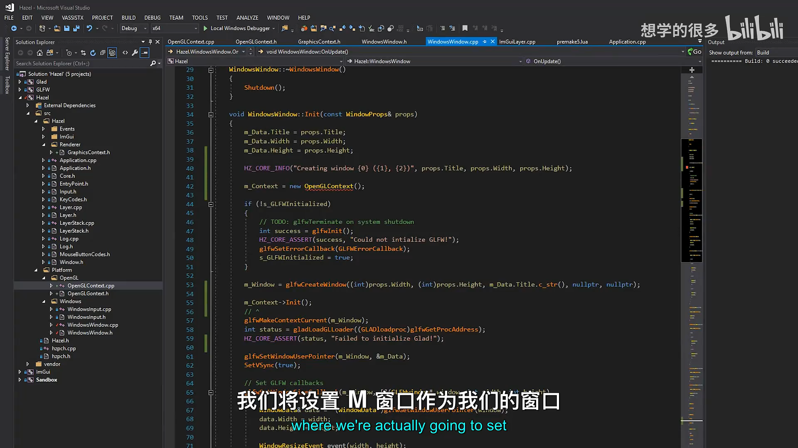
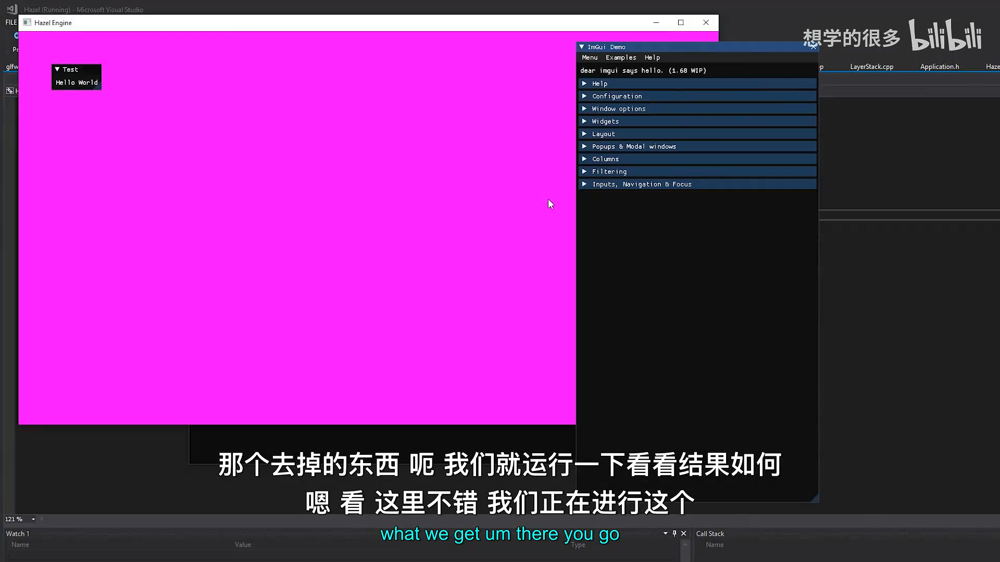
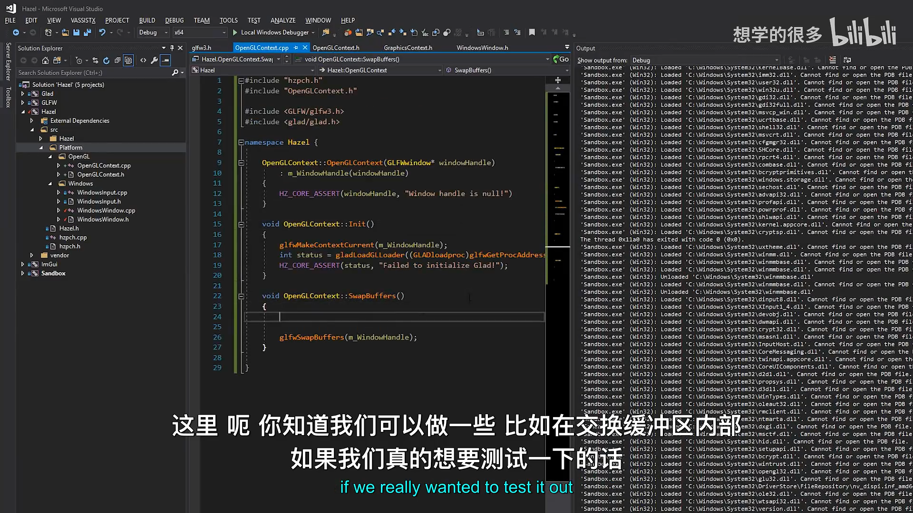
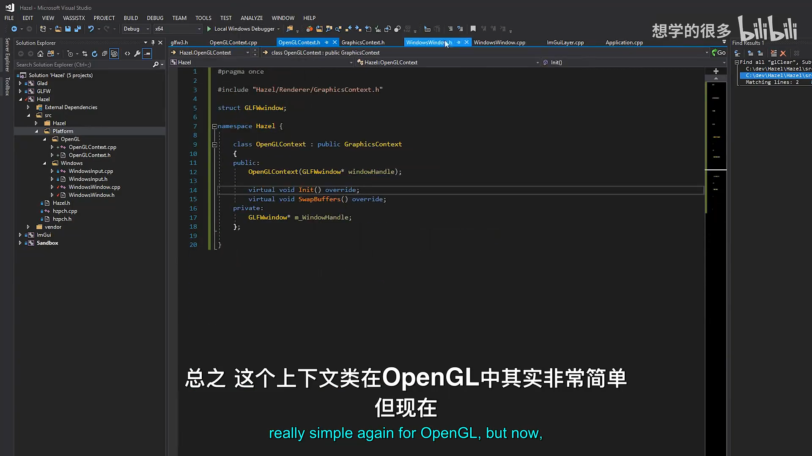

Hazel 游戏引擎笔记 027：实现渲染上下文
本节来源：The Cherno 游戏引擎系列第 27 讲“渲染上下文”，时长约 27 分 03 秒。
原课程与 Hazel 代码作者：The Cherno。代码参考提交：55fc4392。
本文由视频字幕重构、翻译并整理，不是官方教材；术语和代码以原视频及同期 Hazel 仓库为准。
本节目标
静态库转换和零警告构建已经完成，终于可以开始 Renderer 的第一块基础设施：渲染上下文。
当前 WindowsWindow::Init() 直接调用：
glfwMakeContextCurrent(m_Window);
gladLoadGLLoader(...);
WindowsWindow::OnUpdate() 直接调用：
glfwSwapBuffers(m_Window);
这些操作都是 OpenGL 专用代码，却放在“Windows 窗口”实现中。未来 Hazel 还要支持 DirectX、Vulkan 和 Metal，因此需要把上下文逻辑移入 API 专用类。
本讲设计：
GraphicsContext
^
|
OpenGLContext
WindowsWindow 只持有 GraphicsContext*，不再直接依赖 Glad 或具体 OpenGL 初始化流程。
graph TD
A[WindowsWindow] --> B[GraphicsContext interface]
B --> C[OpenGLContext]
B --> D[Future VulkanContext]
B --> E[Future DirectXContext]
B --> F[Future MetalContext]
📷 Renderer 的第一个基础组件是渲染上下文
回到原视频 (00:02:50)
1. 什么是渲染上下文
(参考时间: 00:03:01)
图形 API 需要先建立上下文，才能执行渲染命令。
OpenGL 中，GLFW 已经帮助处理大量平台细节：
glfwMakeContextCurrent(window);
gladLoadGLLoader(...);
OpenGL Context 创建后，当前线程后续的 OpenGL 调用就会作用于该上下文。
Vulkan 则复杂得多，还可能涉及：
- Instance；
- Physical Device；
- Logical Device；
- Queue；
- Swap Chain；
- Framebuffer；
- 平台 Surface。
不同 API 的上下文逻辑差异巨大，因此必须由不同实现类负责。
graph TD
A[GraphicsContext] --> B[OpenGL Context]
A --> C[Vulkan Context]
B --> D[GLFW + Glad]
C --> E[Device / Queue / SwapChain]
📷 OpenGL 上下文相对简单，Vulkan 上下文需要更多显式对象
回到原视频 (00:04:08)
2. 为什么要在 GLFW 之上再抽象
(参考时间: 00:06:40)
GLFW 能帮助创建 OpenGL 和 Vulkan 上下文，但不负责 DirectX 和 Metal。
如果 WindowsWindow 直接写：
glfwMakeContextCurrent(m_Window);
那么它隐含地假设所有 Windows 窗口都使用 GLFW 创建的 OpenGL 或 Vulkan 上下文。
未来如果运行时选择 DirectX 或 Metal，这段代码就不适用。
flowchart TD
A[WindowsWindow] --> B{选择的图形 API}
B -- OpenGL --> C[OpenGLContext]
B -- Vulkan --> D[VulkanContext]
B -- DirectX --> E[DirectXContext]
B -- Metal --> F[MetalContext]
额外的 Context 抽象层不是重复 GLFW，而是为了把将来不属于 GLFW 的 API 也纳入同一生命周期接口。
📷 WindowsWindow 不能把 OpenGL 或 GLFW 上下文写死
回到原视频 (00:04:55)
3. 上下文所有权设计讨论
(参考时间: 00:10:00)
视频先讨论 Context 应如何存储。
3.1 栈对象
OpenGLContext context(window);
优点是生命周期自动管理，但 Context 需要多态。
如果成员写成具体类型：
OpenGLContext m_Context;
以后替换成 DirectXContext 时，WindowsWindow 类型仍被写死。
3.2 指针与多态
GraphicsContext* m_Context;
这样 WindowsWindow 只依赖抽象接口，可以指向不同后端实现。
graph LR
A[WindowsWindow] --> B[GraphicsContext*]
B --> C[OpenGLContext]
3.3 Context 是否全局或静态
视频还讨论过静态 Context：
- 一个窗口通常只有一个渲染 API Context；
- 但高级引擎可能让 DirectX 与 Vulkan 在同一窗口中混合渲染；
- 也可能同时存在多个窗口和多个 Context。
这类高级用法会让静态设计失效。
当前 Hazel 只有一个窗口和一个上下文，因此先选择简单方案：
一个 Hazel Window 拥有一个 GraphicsContext
编者说明：视频明确表示这些设计不是最终方案，后续遇到多窗口或跨 API 需求时可以调整。

📷 Context 需要多态，因此当前设计使用 GraphicsContext 指针
回到原视频 (00:10:00)
📷 当前先约定一个窗口对应一个上下文，保持实现简单
回到原视频 (00:13:00)
4. 创建 GraphicsContext 接口
(参考时间: 00:15:15)
新增目录与文件：
Hazel/src/Hazel/Renderer/
GraphicsContext.h
Hazel/src/Platform/OpenGL/
OpenGLContext.h
OpenGLContext.cpp
GraphicsContext.h：
#pragma once
namespace Hazel {
class GraphicsContext
{
public:
virtual void Init() = 0;
virtual void SwapBuffers() = 0;
};
}
当前接口只包含两个最小功能：
Init()：初始化图形上下文；SwapBuffers()：提交当前帧并交换前后缓冲。
classDiagram
class GraphicsContext {
+Init()
+SwapBuffers()
}
class OpenGLContext {
-GLFWwindow* m_WindowHandle
+Init()
+SwapBuffers()
}
GraphicsContext <|-- OpenGLContext

📷 新增 GraphicsContext 抽象接口和 OpenGL 平台目录
回到原视频 (00:15:15)
5. OpenGLContext 头文件
(参考时间: 00:17:40)
#pragma once
#include "Hazel/Renderer/GraphicsContext.h"
struct GLFWwindow;
namespace Hazel {
class OpenGLContext : public GraphicsContext
{
public:
OpenGLContext(GLFWwindow* windowHandle);
virtual void Init() override;
virtual void SwapBuffers() override;
private:
GLFWwindow* m_WindowHandle;
};
}
5.1 为什么使用前向声明
头文件只需要知道 GLFWwindow 是一个类型，不需要完整定义：
struct GLFWwindow;
因此无需把 <GLFW/glfw3.h> 放进公共头文件。
真正访问 GLFW API 的 .cpp 才包含完整头文件。
视频中出现了一个编译警告：
class GLFWwindow;
但 GLFW 将其定义为 struct。改为：
struct GLFWwindow;
警告即可消失。

📷 OpenGLContext 使用 GLFWwindow 前向声明，并覆盖 Init/SwapBuffers
回到原视频 (00:17:40)
6. OpenGLContext 实现
(参考时间: 00:20:43)
#include "hzpch.h"
#include "OpenGLContext.h"
#include <GLFW/glfw3.h>
#include <glad/glad.h>
#include <GL/GL.h>
namespace Hazel {
OpenGLContext::OpenGLContext(GLFWwindow* windowHandle)
: m_WindowHandle(windowHandle)
{
HZ_CORE_ASSERT(windowHandle, "Window handle is null!");
}
void OpenGLContext::Init()
{
glfwMakeContextCurrent(m_WindowHandle);
int status = gladLoadGLLoader(
(GLADloadproc)glfwGetProcAddress);
HZ_CORE_ASSERT(status, "Failed to initialize Glad!");
}
void OpenGLContext::SwapBuffers()
{
glfwSwapBuffers(m_WindowHandle);
}
}
初始化顺序：
sequenceDiagram
participant W as WindowsWindow
participant C as OpenGLContext
participant G as GLFW
participant L as Glad
W->>C: new OpenGLContext(window)
W->>C: Init()
C->>G: glfwMakeContextCurrent(window)
C->>G: glfwGetProcAddress
C->>L: gladLoadGLLoader(...)
L-->>C: status
构造函数只保存窗口句柄并校验非空；真正的 OpenGL 初始化放在 Init() 中，使生命周期更明确。

📷 在 OpenGLContext::Init 中设置当前上下文并加载 Glad
回到原视频 (00:20:43)

📷 SwapBuffers 把交换缓冲职责移入 Context
回到原视频 (00:21:30)
7. 修改 WindowsWindow
(参考时间: 00:19:18)
WindowsWindow 不再直接初始化 Glad。
7.1 创建上下文
m_Window = glfwCreateWindow(
(int)props.Width,
(int)props.Height,
m_Data.Title.c_str(),
nullptr,
nullptr);
m_Context = new OpenGLContext(m_Window);
m_Context->Init();
之后继续设置窗口回调和 VSync。
7.2 每帧交换缓冲
旧代码：
glfwSwapBuffers(m_Window);
新代码：
m_Context->SwapBuffers();
WindowsWindow 不再知道当前使用的是 OpenGL。
flowchart LR
A[glfwCreateWindow] --> B[new OpenGLContext]
B --> C[Context::Init]
C --> D[Window callbacks / VSync]
D --> E[OnUpdate]
E --> F[Context::SwapBuffers]

📷 WindowsWindow 创建 OpenGLContext 并调用 Init
回到原视频 (00:19:18)
8. 移除窗口中的 OpenGL 依赖
Window 层不再需要：
#include <glad/glad.h>
glfwMakeContextCurrent(...)
gladLoadGLLoader(...)
glfwSwapBuffers(...)
这些代码全部集中到 OpenGLContext。
于是：
- WindowsWindow 只负责窗口生命周期与平台事件；
- OpenGLContext 负责 OpenGL 上下文与缓冲交换；
- 未来可以由其它 Context 替换 OpenGL 实现。
graph TD
A[WindowsWindow] --> B[window creation / events / VSync]
A --> C[GraphicsContext]
C --> D[OpenGLContext]
D --> E[GLFW context + Glad + SwapBuffers]
9. 编译与运行验证
(参考时间: 00:22:15)
构建过程中出现 class GLFWwindow 与 struct GLFWwindow 不一致的警告，改为 struct 后消失。
运行 Sandbox 后：
- 窗口可以正常创建；
- 原有粉色清屏仍然显示；
- Context 初始化成功；
- SwapBuffers 仍能正常提交画面。
测试时尝试使用 OpenGL Immediate Mode 画图形，但没有成功。原因是：
- 项目使用 Core Profile；
- 现代 OpenGL 不再支持
glBegin/glEnd一类立即模式函数； - 当前也没有可用的 Vertex Buffer 与 Shader 封装。
因此本讲的目标不是画三角形，而是先建立一个可用的上下文底座。

📷 修改 struct 声明后构建成功，Sandbox 正常运行
回到原视频 (00:22:51)

📷 应用仍能正常清屏，说明 Context 初始化和 SwapBuffers 工作
回到原视频 (00:23:00)
10. 清屏命令未来归属 Renderer
(参考时间: 00:24:22)
当前 Application::Run() 中仍然调用：
glClearColor(1, 0, 1, 1);
glClear(GL_COLOR_BUFFER_BIT);
视频指出，清屏颜色和清屏命令最终不应长期放在 Application：
- 它属于 Renderer；
- 未来会经过 Framebuffer / Render Target；
- Renderer 负责发出清屏与绘制命令；
- Context 只负责管理图形上下文和提交缓冲。
graph TD
A[Application] --> B[Renderer]
B --> C[Framebuffer / Render Target]
B --> D[Clear / Draw Commands]
D --> E[GraphicsContext]
11. 未来运行时选择 API
(参考时间: 00:25:00)
Context 抽象完成后，可以在 WindowProps 中加入 API 选择：
enum class RendererAPI
{
None,
OpenGL,
Vulkan,
DirectX,
Metal
};
概念创建逻辑：
switch (m_Data.API)
{
case RendererAPI::OpenGL:
m_Context = new OpenGLContext(m_Window);
break;
// ...
}
当前阶段仍然固定使用 OpenGL，但 Context 接口已经为未来选择后端腾出了位置。
flowchart TD
A[WindowProps.API] --> B{选择后端}
B -- OpenGL --> C[OpenGLContext]
B -- Vulkan --> D[VulkanContext]
B -- DirectX --> E[DirectXContext]

📷 未来可在运行时依据 WindowProps 选择不同 Context 实现
回到原视频 (00:25:00)
12. 本节结论
本讲完成了 Renderer 的第一个独立组件：
- 识别 WindowsWindow 直接包含 OpenGL 初始化代码的问题；
- 新增
GraphicsContext抽象接口； - 新增
OpenGLContext； - Context 构造函数接收窗口句柄；
Init()设置当前 Context 并初始化 Glad；SwapBuffers()封装 GLFW 缓冲交换；- WindowsWindow 改为持有
GraphicsContext*； - 移除了 Window 对 Glad 和上下文初始化函数的直接依赖；
- Context 使用多态指针，为 Vulkan / DirectX / Metal 预留空间；
- 运行验证 Context 正常；
- 明确清屏命令和 Framebuffer 未来归 Renderer 管理。
下一阶段将开始实现 Renderer 类，负责清屏颜色、渲染命令与状态管理。